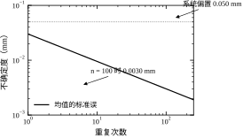
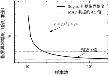
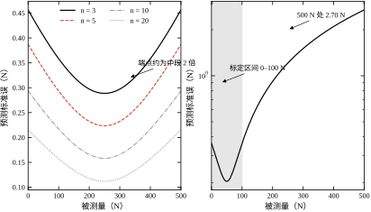
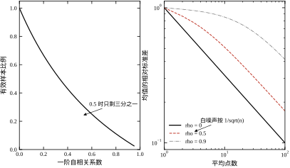
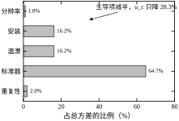

一支量程 500 N 的应变式力传感器，上周标定得到零点 0.8 N、灵敏度 1.996 mV/V，这周在同一台标定机上重标，零点变成 -1.3 N、灵敏度 1.989 mV/V。两次都“通过”了出厂指标，但把它们分别写进控制器，同一给定力下的稳态值会差出千分之几的满量程。若这套力环用于张力控制、带材允许偏差是 1%，这千分之几就是可观的余量损失。
两次标定差的不是传感器坏了，而是四件在现场无法完全复现的事：环境温度差了几摄氏度，敏感元的零点漂移没有补偿；安装螺栓的拧紧力矩不同，弹性体的预紧应变不同；电缆位置变了，屏蔽层感应到的干扰不同；标定机自身的标准器也带着自己的不确定度。标定不是把误差清零，而是把误差连同它的不确定度一起记录下来。 只记一个数、不记这个数有多可信，等于把系统误差伪装成了真值。
这一章要回答的正是这个问题：一次测量给出的数，凭什么信、信到什么程度、下一次测量会不会给出同样的数。
测量数据处理不是“采完数据再滤波”这么一步，而是一条有先后依赖的链。表 13-1 把这条链拆成六步，并写明每一步能压掉什么、压不掉什么、以及它自己会引入什么新问题。
表 13-1 测量数据处理链的六步与各自的能力边界
| 步骤 | 典型方法 | 能压掉 | 压不掉 | 自身引入的问题 |
|---|---|---|---|---|
| 去趋势 | 减去线性或多项式基线 | 温漂、零点缓慢漂移 | 阶跃型偏置、增益误差 | 把慢变真实信号一并减掉 |
| 异常值剔除 | 3\sigma、MAD、中位数 | 脉冲干扰、丢帧、错码 | 系统性偏离、整段偏移 | 误删真实瞬态、掩盖故障 |
| 滤波 | 低通、滑动平均、中值 | 带外噪声、量化抖动 | 带内噪声、偏置 | 相位滞后、瞬态拖尾 |
| 同步与重采样 | 时间戳对齐、插值 | 通道间时差 | 时钟漂移本身 | 插值引入相关性与平滑 |
| 平均 | 时域多次、频域多次 | 随机噪声（1/\sqrt{N}） | 系统误差 | 把时变系统平均成“假稳态” |
| 拟合与合成 | 最小二乘、GUM、蒙特卡洛 | —— | —— | 模型失配被算进参数不确定度 |
这张表的读法是自上而下：越靠前的步骤越“物理”，越靠后的步骤越“数学”。 去趋势和异常值剔除处理的是信号本身的问题，做错了会永久损失信息且无法恢复；滤波、平均、拟合处理的是统计问题，做错了至少还能从原始数据重来。所以工程上的顺序必须是先存原始数据、再做不可逆处理，原始数据要留到项目结束。
一个常见的错误顺序是“先滤波再剔异常值”。滤波器把脉冲干扰摊平成一串小幅波动，3\sigma 判据就再也认不出它，异常值被平滑成“正常数据”混进结果。正确顺序是先去异常值（或先用中值滤波压制脉冲），再低通滤波。先做不可逆的、针对明确物理原因的处理，再做可逆的、针对统计特性的处理。
工程文献里这两个词经常混用，但它们的含义完全不同。
误差是测量值与真值之差，e=x-\mu，它是一个确定的数，只是我们不知道它是多少。不确定度是对误差可能范围的量化，u 的单位与被测量相同，含义是“真值落在 x\pm ku 内的可信程度”。若把误差当成一个随机变量，不确定度就是它的标准差（标准不确定度），扩展不确定度则乘上包含因子 k。
这个区分有三条实际后果：
按来源，误差分两个家族。系统误差在重复测量中保持不变或按确定规律变化：零点偏置、增益误差、非线性、温漂、安装应力。随机误差在重复测量中不可预测地变化：热噪声、散粒噪声、量化误差、时基抖动、机械振动。两者的处理手段不通用：系统误差靠标定、溯源、对称布置、差分测量来减小；随机误差靠平均、滤波来减小。用平均去对付系统误差，平均一万次也还是那个偏置；用标定去对付随机误差，标定得再准，单次读数照样抖。
拿到一组测量数据、或者准备设计一次辨识实验，在把数写进报告之前，有六个问题必须能给出定量答案：
这六个问题对应 §13.6 的六组实验。它们也是“数据处理”这件事的边界：数据处理只能把已有信息提取得更充分，不能创造信息。 采样时没采到的频段、标定时没覆盖的量程、同步时没对齐的通道，事后都无法补回来。
本章的核心是：任何一次测量结果都必须连同它的不确定度一起给出；不确定度由随机分量与系统分量合成，随机分量靠平均与滤波压缩，系统分量只能靠标定与溯源压缩，二者不可互相替代。
路线是：§13.2 建立误差、不确定度、统计量的定义，包括样本标准差、标准误、协方差、A 类与 B 类评定，并给出线性化失效时的蒙特卡洛传播、稳健回归与修约规则；§13.3 推导不确定度传播律、加权最小二乘、异常值判据的统计性质，以及标定点数与参数不确定度的关系，另含 Allan 方差与残差诊断；§13.4 讲离散实现，包括在线均值与方差的递推、滑动中值、异常值剔除的工程判据、标定表的存储与插值、定点标度与数据完整性；§13.5 讲工程边界，包括什么情况下不能平均、什么情况下不能滤波、标定周期怎么定、在线标定与不确定度到控制误差的折算；§13.6 用六组实验把解析式核对一遍；§13.7 收束。
与相邻章的分工：传感器的物理原理与信号链见第 12 章，滤波器的频域设计见第 14 章，辨识实验的激励设计与数据采集见第 16 章与第 17 章，控制器对测量噪声的敏感度见第 41 章。PID 整定见第 44 章与第 106 章，MPC 见第 58 章与第 80 章，Smith 预估见第 47 章与第 107 章。本章只讲“数据怎么处理和怎么定量地说明它有多准”，不重复这些章的内容。
第一个错误直觉：多测几次就准了。 平均只能压随机误差，压不了系统误差。一个带 -0.5\% 增益误差的传感器，平均 10^6 次，读数的不确定度可以小到 0.001\%，但那个 -0.5\% 的偏置一分不少。此时报告的“高精度”是虚假的：读数高度可重复，却一致地偏离真值。重复性不等于准确度，这是测量领域最容易混淆的一对概念。
第二个错误直觉：拟合的 R^2 高就说明模型对。 R^2 只衡量残差占总变异的比例，对系统性偏差不敏感。用一条直线拟合一段轻微弯曲的标定曲线，R^2 可以到 0.9999，但在量程两端残差可能是中段的十几倍。要看残差图，不看 R^2。 残差若呈现明显的弯曲、喇叭口或分段跳变，说明模型形式选错了，此时提高多项式阶数往往只是把系统误差藏进系数里。
第三个错误直觉：不确定度就是标准差。 标准差只描述重复测量的分散性，属于 A 类分量；器件指标、标准器溯源、分辨率量化、安装应力这些 B 类分量不在其中。一个重复性极好的传感器，其合成不确定度可能主要由 B 类分量决定。只报标准差，等于把系统误差那一半藏了起来。
一组 n 次重复测量 x_1,\dots,x_n，工程上真正用到的统计量只有五个，它们的分工互不重叠。
样本均值估计被测量的最佳值：
\bar{x}=\frac{1}{n}\sum_{i=1}^{n}x_i \tag{13-1}
样本方差估计单次测量的分散性：
s^2=\frac{1}{n-1}\sum_{i=1}^{n}(x_i-\bar{x})^2 \tag{13-2}
均值的标准误估计“\bar{x} 这个数本身有多不确定”：
s_{\bar{x}}=\frac{s}{\sqrt{n}} \tag{13-3}
极差 R=x_{\max}-x_{\min} 用于快速估计分散性，小样本时 s\approx R/1.128（n=2）、R/2.059（n=4）、R/2.326（n=5）、R/3.078（n=10）。中位数与 MAD 用于稳健估计，见 §13.2.7。
这五个量里最容易被误用的是 s 与 s_{\bar{x}}。s 描述“下一次单次读数会偏离多少”，s_{\bar{x}} 描述“平均值偏离真值多少”。报告测量结果时写的是后者：“测得 10.02 mm，重复 10 次的标准差 0.03 mm”是错的，应该说“10 次平均 10.02 mm，单次标准差 0.03 mm，均值的标准误 0.0095 mm”。 前者把单次分散性当成了平均值的不确定度，夸大了三倍多。
式 (13-2) 除以 n-1 而不是 n，原因不是“修正小样本偏差”这么一句口号，而是 \bar{x} 本身用掉了数据的一个自由度。
若真值 \mu 已知，离差 x_i-\mu 是 n 个独立量，\sum(x_i-\mu)^2/n 是 \sigma^2 的无偏估计。但 \mu 未知，只能用 \bar{x} 代替，而 \bar{x} 是这 n 个数的线性组合。把 x_i 分解成“均值方向”与“离差方向”，离差向量被约束在 n-1 维子空间里，满足 \sum(x_i-\bar{x})=0。约束掉一个自由度，平方和就少了一份独立信息，除以 n-1 才还原成 \sigma^2 的无偏估计。
工程上的推论很直接：n=2 时 s 的自由度只有 1，s 本身极不可靠。 两次读数算出的 s 与真实 \sigma 可能差一倍以上，用它去定 3\sigma 阈值，等于用一个不确定的尺子去量另一个不确定的量。n\ge5 是做统计判断的最低要求，n\ge10 才谈得上稳定。
s_{\bar{x}}=s/\sqrt{n} 只给出了“平均值的标准差”，要给出区间还得乘一个包含因子。当 \sigma 未知、只能用 s 代替时，这个因子不是正态分布的 1.96，而是 t 分布的分位数：
\bar{x}\pm t_{1-\alpha/2,\,\nu}\cdot\frac{s}{\sqrt{n}},\qquad \nu=n-1 \tag{13-4}
t 分布比正态“胖”，因为分母 s 本身有随机性。自由度越小，尾巴越厚。\alpha=0.05 时，\nu=1 的 t=12.71，\nu=4 的 t=2.776，\nu=9 的 t=2.262，\nu\to\infty 才趋于 1.96。
这张表解释了工程上一条经验：小样本的置信区间比直觉宽得多。 重复 5 次、s=0.03 mm，均值的 95% 区间半宽是 2.776\times0.03/\sqrt{5}=0.037 mm，比均值本身的不确定度还接近单次标准差；重复 20 次才降到 2.093\times0.03/\sqrt{20}=0.014 mm。想靠增加次数把区间压窄，收益是 1/\sqrt{n}：从 5 次到 20 次，次数翻四倍，区间只窄了 2.6 倍。
不确定度的评定按信息来源分两类，这个划分决定了“能不能靠多测几次改善”。
A 类评定用重复测量的统计分散性估计，u_A=s/\sqrt{n}，自由度 \nu_A=n-1。它只反映随机分量。
B 类评定用一切非统计的信息估计：器件手册的精度指标、标定证书的扩展不确定度、分辨率的量化宽度、环境条件的界限。B 类不给标准差，给的是一个“区间半宽” a，再按假定的分布折算成标准不确定度：
u_B=\frac{a}{k_B} \tag{13-5}
常用折算：均匀分布 k_B=\sqrt{3}（只知道界限、不知分布，如量化、手册的“\pm”指标）；三角分布 k_B=\sqrt{6}（两个均匀量之和，如两次装夹的偏心）；正态分布 k_B=2（证书给出 95% 扩展不确定度）；反正弦分布 k_B=\sqrt{2}（正弦振动、失配）。
均匀分布用得最多，也最容易被误用。手册写“精度 \pm0.1\% FS”，这个 \pm0.1\% 通常是极限误差，落在区间内任何位置的可能性相近，折算成标准不确定度是 0.1\%/\sqrt{3}=0.058\%，而不是 0.1\%/2=0.05\%，更不是直接拿 0.1\% 当标准差。把极限误差当标准差，会把 B 类分量高估约 1.7 倍；反过来拿它当 2\sigma，又会低估 15%。
各分量相互独立时，合成标准不确定度是方和根：
u_c=\sqrt{\sum_{i=1}^{m}u_i^2} \tag{13-6}
这条式子的含义是“方差相加”，不是“误差相加”。两个各为 1 的分量合成后是 \sqrt{2}=1.414，不是 2；十个各为 1 的分量合成后是 3.16，不是 10。只要有一个分量显著大于其余，它就是主导项，压其他项没有意义。 这是不确定度分析最实用的结论：先找主导项，再决定改哪里。
合成后的自由度按 Welch–Satterthwaite 公式折算：
\nu_{\mathrm{eff}}=\frac{u_c^4}{\sum_{i=1}^{m}\dfrac{u_i^4}{\nu_i}} \tag{13-7}
B 类分量的自由度通常取 \infty（认为其区间可靠），因此当 B 类占主导时 \nu_{\mathrm{eff}} 很大，包含因子接近 1.96；当 A 类小样本占主导时 \nu_{\mathrm{eff}} 接近 n-1，包含因子要取 t 分布的值。工程上常见的错误是：合成时用了 t 分布的 2.776，却按正态的 1.96 报扩展不确定度，或者反过来。
被测量 y 由 m 个直接测量量经 y=f(x_1,\dots,x_m) 算出时，一阶近似下：
u_c^2(y)=\sum_{i=1}^{m}\left(\frac{\partial f}{\partial x_i}\right)^2u^2(x_i)+2\sum_{i<j}\frac{\partial f}{\partial x_i}\frac{\partial f}{\partial x_j}u(x_i,x_j) \tag{13-8}
各输入量独立时第二项为零，只剩灵敏度系数的平方加权。这条式子在工程上有三个常用特例：
第三条最容易被忽略。用压差测流量，q\propto\sqrt{\Delta p}，压差 1\% 的不确定度变成流量 0.5\%；反过来，用流量反推压差，1\% 的流量误差放大成 2\% 的压差误差。在传播链上，指数大于 1 的那一环是误差放大器，应当优先改善。
式 (13-8) 的线性化假设在非线性强、不确定度大时失效（相对不确定度超过 10% 量级），此时应当用蒙特卡洛传播：对每个输入量按其分布抽样，计算 y 的样本分布，直接取分位数。GUM 补充文件把蒙特卡洛列为与线性传播并列的方法，不是“更精确的替代”。
异常值判据的核心矛盾是：阈值定得松，异常值漏网；定得紧，正常点被误删。
3\sigma 判据：|x_i-\bar{x}|>3s 判为异常。问题是 \bar{x} 与 s 都被异常值本身污染——一个偏离 20 倍的点会把 s 抬高好几倍，反而使自己“落回” 3\sigma 以内。这个现象叫掩蔽效应，样本越小时越严重。
MAD 判据：用中位数与中位绝对偏差代替均值与标准差：
\mathrm{MAD}=\operatorname{median}\left(|x_i-\tilde{x}|\right),\qquad \hat{\sigma}=1.4826\,\mathrm{MAD} \tag{13-9}
常数 1.4826 使 \hat{\sigma} 在正态数据下与标准差一致。中位数与 MAD 的崩溃点是 50%，即少于一半的点异常时估计不受影响，所以掩蔽效应基本消失。判据取 |x_i-\tilde{x}|>3\hat{\sigma}。
Grubbs 检验：对“只有一个异常值”的假设做正式检验，统计量
G=\frac{\max_i|x_i-\bar{x}|}{s} \tag{13-10}
超过临界值（n=10、\alpha=0.05 时 G_{\mathrm{crit}}=2.290；n=20 时 2.709）才剔除。它的优点是给了明确的显著性水平，缺点同样是被 \bar{x} 与 s 污染，且一次只能剔一个，多个异常值要迭代。
三个判据的选择不看“哪个更先进”，看两件事：异常值的比例与是否允许误删。比例低于 5%、且异常值来源明确（通信错码、传感器饱和），用 3\sigma 足够；比例可能超过 10%、或异常值幅度极大，必须用 MAD；需要写进报告、给出显著性依据，用 Grubbs。
标定的本质是估计映射 y=c_0+c_1x 的两个系数。写成矩阵形式，n 个标定点满足
\mathbf{y}=\mathbf{X}\boldsymbol{\beta}+\boldsymbol{\varepsilon},\qquad \mathbf{X}=\begin{bmatrix}1&x_1\\ \vdots&\vdots\\ 1&x_n\end{bmatrix},\quad \boldsymbol{\beta}=\begin{bmatrix}c_0\\ c_1\end{bmatrix} \tag{13-11}
最小二乘解 \hat{\boldsymbol{\beta}}=(\mathbf{X}^{\mathsf{T}}\mathbf{X})^{-1}\mathbf{X}^{\mathsf{T}}\mathbf{y}，参数协方差
\operatorname{cov}(\hat{\boldsymbol{\beta}})=\sigma^2(\mathbf{X}^{\mathsf{T}}\mathbf{X})^{-1} \tag{13-12}
\sigma^2 由残差估计：\hat{\sigma}^2=\dfrac{\|\mathbf{y}-\mathbf{X}\hat{\boldsymbol{\beta}}\|^2}{n-2}，分母的 n-2 与式 (13-2) 的 n-1 同源——两个系数用掉了两个自由度。
式 (13-12) 的对角线开方就是截距与斜率的标准误。这个式子还直接给出两条工程结论：标定点越多、x 的分布越宽，参数越准；截距与斜率负相关，x 的均值离零点越远，相关性越强。后者解释了为什么只在小量程内标定的传感器，外推到大量程时误差会迅速放大：斜率的不确定度被杠杆臂放大到了外推点上。
式 (13-8) 的传播律来自一阶泰勒展开，它把每个输入量的影响近似成线性。这个近似什么时候不够用，可以看二阶项的相对大小：
\Delta y\approx f'u+\frac{1}{2}f''u^{2} \tag{13-13}
第二项与第一项之比约为 \frac{1}{2}(f''/f')u，即“相对不确定度乘以一个曲率因子”。相对不确定度小于 10%、曲率因子在 1 附近时，二阶项贡献不到 5%，一阶展开够用；一旦相对不确定度到 50%，二阶项就能改掉结论。
一个能当场算的例子是 y=e^{x}、x=0\pm0.5。线性传播给出 u_y=e^{0}\times0.5=0.5；用 20 万次抽样直接算，输出的均值 1.133774、标准差 0.604965，比线性结果大 21%；95% 区间是 [0.3771,\,2.6623]，而不是线性化给出的对称区间 [0.0200,\,1.9800]。标准差只差 21%，区间下限却差了一个数量级——指数函数的左尾被压扁、右尾被拉长，用一个对称的 \pm 去描述它，形状本身就是错的。
蒙特卡洛传播只有四步：给每个输入量指定分布（正态由 u 与 \nu 定，均匀由半宽定）；独立抽样 M 组；逐组代入测量模型算出 y；对 y 的样本取均值、标准差与规定包含概率的分位数。M 取多大由收敛速度定，抽样本身带来的相对误差约为
\varepsilon_{\mathrm{MC}}\approx\frac{1}{\sqrt{2M}} \tag{13-14}
M=10^{4} 时 0.7%，M=10^{6} 时 0.07%。工程上取 10^{5}–10^{6} 已足够，再多只是在和浮点舍入较劲。
输入量相关时不能各自独立抽样。做法是对协方差矩阵做 Cholesky 分解 \mathbf{C}=\mathbf{L}\mathbf{L}^{\mathsf{T}}，先抽标准正态向量 \mathbf{z}，再令 \mathbf{x}=\boldsymbol{\mu}+\mathbf{L}\mathbf{z}，样本的经验协方差就会收敛到 \mathbf{C}。忽略相关性是本方法最常见的误用，它造成的低估往往比线性化误差还大。
蒙特卡洛还有一个副产品：包含因子。线性传播里 k=2 约对应 95%，非正态输出下这个对应关系失效。上例的 95% 区间半宽是 (2.6623-0.3771)/2=1.1426，除以标准差 0.604965 得 k_{\mathrm{MC}}=1.889——同样的置信水平，k 从 2 掉到 1.89。报告里若仍写 k=2，实际包含概率会高于名义值，看似保守，实则掩盖了分布的不对称。
必须改用蒙特卡洛的场合有五类：相对不确定度超过 10%；测量模型强非线性（指数、幂次大于 3、饱和）；输入量分布明显非正态（均匀、三角、截断）；输出接近物理边界（不能为负的浓度、有上限的力）；输出分布出现双峰（两种工况混在一起）。这五种情况下，线性传播给出的不只是一个偏小的数，而是一个形状错误的结论。控制器里不做蒙特卡洛，它属于标定与验收环节的工具；实时通道仍用式 (13-8)，但要把“这条式子在当前工况下是否成立”作为设计输入写进文档。
可复现性也要交代清楚：随机数发生器、种子、抽样次数。本章脚本固定种子 20261013，读者重跑会得到同一组数——一个不能复现的不确定度，和没有不确定度是一样的。
最小二乘的崩溃点是 0：一个点只要离得足够远，就能把斜率拉到任意值，因为平方项给了它无界的杠杆。标定现场恰恰容易出现这种点——量具没放稳、加载时碰了一下、砝码读数抄错一位。
Theil–Sen 估计不用平方，而是把所有点对的斜率取中位数：
\hat{c}_1^{\mathrm{TS}}=\operatorname{median}_{i<j}\frac{y_j-y_i}{x_j-x_i} \tag{13-15}
n 个点共 n(n-1)/2 个斜率，中位数只由排序中间的那几个决定，少数离谱的点挪不动它。它的崩溃点是 29.3%，即近三成的点同时被污染才会失效，而最小二乘一个点就够了；代价是正态数据下的渐近效率约 0.744，要达到同等精度需要多约三分之一的样本。
用一个 6 点算例看清差别。真斜率 1.0，前 5 点带轻微噪声（1.02、2.05、2.94、4.08、4.97），第 6 点被误记成 12.0。最小二乘给出斜率 1.85143、截距 -0.11857，斜率偏了 85%；Theil–Sen 在 15 个点对斜率上取中位数得 1.02000，只偏 2%；把第 6 点剔除后重做最小二乘得 0.99300。一个坏点让最小二乘的结论彻底作废，却几乎没碰动 Theil–Sen。 15 个点对里有 5 个含异常点，占三分之一，但中位数落在干净的 10 个里，所以结果不受影响——这正是崩溃点 29.3% 的直观含义：按“异常点个数占比”算，本例只有 1/6。
Theil–Sen 的代价是计算量 O(n^2)。n=20 只有 190 个点对，随手可算；n=1000 是 50 万对，就不合适了。大数据量改用迭代重加权最小二乘：先做一次普通最小二乘，用残差定权重 w_i=\min\left(1,\,c/|r_i|\right)（Huber 权，c 通常取 1.345\hat{\sigma}），再解加权问题，重复三到五轮。它保留了 O(n) 的规模，崩溃点不如 Theil–Sen，但足以对付零星的粗大误差。
工程上的分工是清楚的：标定点点数少（5–20 个）、异常机制明确，用 Theil–Sen 做一次交叉核对；在线数据流长，用 IRLS 或中值滤波。 两者都不该替代对异常来源的追查——稳健估计能给出一个可用的斜率，但不会告诉你那个 12.0 是怎么来的。
标定报告里最常见的一个数是决定系数
R^{2}=1-\frac{\sum_{i=1}^{n}\left(y_i-\hat{y}_i\right)^{2}}{\sum_{i=1}^{n}\left(y_i-\bar{y}\right)^{2}} \tag{13-16}
它常被当成“标定做得好不好”的判据，0.999 以上就放心，0.99 就皱眉。这个用法是错的，因为分母 \sum(y_i-\bar y)^2 与标定跨度直接挂钩，而跨度是实验设计选的，不是精度指标。
用本章的参数算一遍就清楚了：残差标准差 0.5 N、20 个等距标定点，跨度取 500 N 时 R^2=0.999990；跨度缩到 100 N，R^2=0.999756；缩到 15.6 N，R^2=0.989962；再缩到 10 N，R^2=0.975571。同一条测量链、同样的噪声，只因为标定跨度从 500 N 改成 15.6 N，R^2 就从五个 9 掉到两个 9。 精度一点没变，变的是分母。
反过来更危险：把跨度拉大可以把 R^2 刷得很漂亮，但预测标准误一点没降——式 (13-23) 里只有 n 与 S_{xx} 决定精度，而 S_{xx} 随跨度平方增长，R^2 的分母也跟着平方增长，两者同步，R^2 对“标定点该多密”完全不敏感。
真正该报告的是三个量：残差标准差 \hat\sigma（噪声水平）、参数标准误（式 (13-12) 对角线开方）、规定工作点处的预测标准误（式 (13-23)）。三个都带物理单位，读者能直接判断“这个数够不够用”。R^2 无量纲，又是跨度与噪声的混合体，不承担这个职责。
外推场合 R^2 更具有欺骗性。实验四里只在 0–100 N 内标定 6 点，R^2 依然很高，但外推到 500 N 的预测标准误是 2.6970 N。高 R^2 只说明“标定点附近的点落在一条直线附近”，对直线能延伸多远一个字都没说。 这也是为什么外推必须单独给出不确定度，而不能拿拟合优度顶替。
修约本身就是一次量化，它的不确定度可以算：末位单位为 q 时，舍入误差在 [-q/2,\,q/2] 内均匀分布，标准差为
u_{\mathrm{round}}=\frac{q}{2\sqrt{3}} \tag{13-17}
读数记到 0.01 mm 时 u_{\mathrm{round}}=0.0029 mm，相对重复性 0.030 mm 可以忽略；若为了“看起来简洁”只记到 0.1 mm，u_{\mathrm{round}}=0.029 mm，与重复性同量级，这时记录位数就成了误差源。记录位数要由测量能力定，不能由书写习惯定。
报告里的有效数字有两条硬规则。第一，扩展不确定度 U 只保留一至两位有效数字，通常两位；第二，测量结果的末位与 U 的末位对齐。U=0.7178 N 应写成 0.72 N，结果写成 100.20 N 而不是 100.2 N——写成 100.2 N 就暗示末位是 0.1 N，与 U=0.72 N 不匹配。反过来，把 U 写成 0.7178 N 是伪精度：多出来的两位没有任何统计意义。
修约只能做一次。中途把中间量修约再代入后续计算，会引入额外的舍入误差，且方向不可控。工程做法是全程用双精度，只在最终输出时按规则修约一次；若必须手工计算，中间量至少多留两位。
相对量的分母是现场争议的高发区。同一个 u_c=0.3589 N，除以满量程 500 N 得 0.0718% FS，除以 10 N 的当前读数得 3.589%——相差 50 倍，说的却是同一个不确定度。 指标书上写 “%FS” 还是 “%reading”，必须逐字确认：前者在大量程处宽松、小量程处苛刻；后者相反。选型时若把 %FS 当成 %reading 去核算小信号工况，会严重低估误差。
单位换算同样会埋雷。1\ \mathrm{kgf}=9.80665 N，工程上常按 9.8 或 10 近似，两种近似分别带来 0.07% 与 2.0% 的偏差——后者已经超过多数力传感器的精度等级。换算常数要写进程序常量并注明来源，不要在注释里写“约等于”。
设单次测量 x_i=\mu+b+\varepsilon_i，b 是系统偏置，\varepsilon_i 独立同分布、均值 0、方差 \sigma^2。n 次平均为
\bar{x}=\mu+b+\frac{1}{n}\sum_{i=1}^{n}\varepsilon_i \tag{13-18}
右边第三项的方差是 \sigma^2/n，随 n 趋向 0；第二项 b 与 n 无关。平均的作用是把随机项除以 \sqrt{n}，对系统项连碰都没碰到。
实验一把这条性质量化了：真值 10.000 mm、偏置 +0.050 mm、单次标准差 0.030 mm，重复 5 次时 95% 区间半宽 0.0372 mm、真值覆盖率 17.0%；重复 100 次后半宽收到 0.0060 mm，覆盖率降到 0.0%。覆盖率下降不是统计方法出了问题，恰恰相反：区间越准，越清楚地暴露了它不含真值。 一个只含 A 类分量的区间，天生无法覆盖系统偏置，这正是不确定度评定必须把 B 类分量合进去的原因。
这条推导也给出一条工程判据：如果增加平均次数后，测量结果稳定地停在某个偏离真值的值上，说明剩下的误差是系统误差，继续平均只是浪费时间——此时该做的是重新标定，不是继续采样。

图 13-1 把式 (13-18) 的两项画在同一张双对数图上：斜线是标准误 \sigma/\sqrt{n}，斜率为 -1/2，每把 n 提高十倍，纵向只降 3.16 倍；水平线是系统偏置 0.050 mm，不随 n 移动。本例中从 n=1 起标准误就已在偏置线之下，继续平均只是在一条对总误差已无影响的曲线上往下走——n=100 时标准误 0.0030 mm，只有偏置的 6%。判读这张图的方法不是找交点，而是看两条线哪一条在上：在上方的那一项才是总误差的实际控制者。
由式 (13-18)，把标准误从 s 压到目标值 s_{\mathrm{target}} 所需次数
n=\left(\frac{s}{s_{\mathrm{target}}}\right)^2 \tag{13-19}
要压 10 倍，需要 100 次；压 100 倍，需要 10000 次。而每次测量要占用时间，若单次测量耗时 T_m，总耗时 nT_m 随目标精度的平方增长。精度每提高一个数量级，时间要付两个数量级的代价。
实验一的数据可以换成一张时间账：采样率 1 kHz、单次测量 1 ms，5 次平均耗时 5 ms，100 次平均耗时 100 ms。对一个带宽 10 Hz 的控制环，100 ms 的平均窗本身就是 1 Hz 的低通，相位滞后近 90^\circ，环早就不能用了。平均是最便宜的降噪手段，也是最贵的时间开销，这就是为什么工程上更倾向用模拟滤波或提高单次测量精度，而不是无脑堆平均次数。
还有一个隐藏条件：平均要求被测量在平均窗内不变。若被测量以斜率 \dot{y} 变化，n 次平均引入的滞后是 (n-1)T_m/2，折算成误差是 \dot{y}(n-1)T_m/2。当这个误差超过降噪收益时，平均就亏了。平均窗的长度必须与被测量的变化速率匹配，这一点在 §13.5 还会展开。
设 n 个点中有一个异常值，幅度 k\sigma，其余为独立正态噪声。此时样本方差的期望可以精确算出：
\frac{\mathbb{E}[s^2]}{\sigma^2}=\frac{n-1}{n}+k^2\frac{n-2}{n(n-1)} \tag{13-20}
n=20、k=5 时，右边 =0.95+25\times0.0474=2.134，即 s 被抬到 1.46\sigma。异常值越大，s 越大，3s 这条线跟着水涨船高。
检出条件是异常值到污染均值的距离超过 3s：
k\left(1-\frac{1}{n}\right)>3\sqrt{\frac{n-1}{n}+k^2\frac{n-2}{n(n-1)}} \tag{13-21}
n=20 解得 k>4.24。也就是说，一个 4 倍标准差的异常值，在 20 个样本里用 3\sigma 判据是查不出来的——它把自己藏进了自己抬高的标准差里。实验三的数值扫描给出 5–6 倍才检出，比解析值更高，因为单次样本的 s 还带随机波动。
式 (13-21) 还说明掩蔽效应随样本量急剧减弱：n=5 时右边恒大于左边，解析上永远检不出；n=10 要 k>28.5；n=20 要 k>4.24；n=100 才回到 k>3.2。样本越少，3\sigma 越不可信；n\le5 时这条判据实际上等于没有。

图 13-2 是式 (13-21) 的数值解：横轴样本数取对数，纵轴是 3\sigma 判据能检出的最小异常幅度。n=20 处为 4.24 倍，n=10 处升到 28.5 倍，n\le5 时曲线冲出图外——解析上无解。随着 n 增大，曲线缓慢趋近 3 倍渐近线，n=200 时仍在 3 倍上方。图中另画了 4.5 倍参考线，代表 MAD 判据在大样本下的等效临界幅度，它几乎不随 n 漂移，这正是稳健统计量的价值所在。小样本不要用 3\sigma；若不得不用，就要接受它只能抓住离谱到几十倍的异常。
MAD 的崩溃点是 50%，这不是一句定性描述，而可以从影响函数看出来：中位数只由排序后中间的那个（或两个）值决定，单个点无论偏离多远，只要它不跨过中间位置，中位数就不变。因此异常值对 \tilde{x} 与 MAD 的影响是有界的，s 的影响则是无界的。
代价是效率。正态数据下，MAD 估计量的渐近效率约为 0.368：要达到与样本标准差相同的精度，MAD 需要约 2.7 倍的样本量。 实验二里两者都正确检出了两个异常值，但这不是说 MAD 全面占优——在干净数据、大样本、只关心标准误的场合，s 的精度更高。
选择判据的正确姿势是先问“异常值比例可能多大”：低于 5%、来源明确（错码、饱和、丢帧），3\sigma 够用且精度更高；超过 10%、或存在成片异常（通信中断、传感器脱落），必须用 MAD 或中位数类方法。判据的选择取决于对异常机制的了解，不取决于哪个算法看起来更稳健。
均匀取 n 点、跨度 L 时，x 的离差平方和为
S_{xx}=\frac{n(n+1)}{12(n-1)}L^2 \tag{13-22}
代入式 (13-12)，任意点 x_0 处的预测标准误
s_{y}(x_0)=\sigma\sqrt{\frac{1}{n}+\frac{(x_0-\bar{x})^2}{S_{xx}}} \tag{13-23}
在量程中心 x_0=\bar{x}=L/2，第二项为零，s_y=\sigma/\sqrt{n}；在端点 x_0=L，代入式 (13-22) 得
s_{y}(L)=\sigma\sqrt{\frac{1}{n}+\frac{3(n-1)}{n(n+1)}}\;\xrightarrow[n\to\infty]{}\;\frac{2\sigma}{\sqrt{n}} \tag{13-24}
端点的预测不确定度是大样本下的 2 倍，与取多少点无关。 实验四的数据与此吻合：n=20 时中心 0.1118 N、端点 0.2155 N，正好 1.93 倍；n=5 时中心 0.2236 N、端点 0.3873 N，1.73 倍——点数少时还不到 2 倍，因为端点的杠杆还没完全展开。
式 (13-24) 的 2 倍系数解释了一条现场经验：标定曲线在满量程附近最不可信，而控制系统偏偏最爱用满量程附近的数据做增益整定。 若工艺允许，工作点应尽量落在量程中段；若必须用端点，就要接受 2 倍的不确定度，或者在该点加密标定。
外推的代价更大。实验四中只在 0–100 N 内标定 6 点，区间内 50 N 处预测标准误 0.2041 N，外推到 500 N 处变成 2.6970 N，放大 13.2 倍。放大倍数由式 (13-23) 的第二项主导：
\frac{s_y(x_{\mathrm{ext}})}{s_y(\bar{x})}\approx\frac{|x_{\mathrm{ext}}-\bar{x}|}{\sqrt{S_{xx}/n}} \tag{13-25}
分子是外推距离，分母是标定点的等效分布宽度。外推距离超过标定跨度的一半，不确定度就进入不可接受区。 这条判据比“不要外推”的口号更有用：它给出了“外推多远还算勉强可以”的边界。

图 13-3 左图把式 (13-23) 画成四条曲线：n 越大整条曲线越低，但形状不变，都是中间低、两端高的抛物线形，端点始终约为中段的 2 倍。右图把标定区间缩到 0–100 N 后外推到 500 N，曲线在对数坐标上近似直线上升，500 N 处达到 2.70 N，是同一区间 50 N 处 0.2041 N 的 13.2 倍。外推区的不确定度不是“略微变大”，而是随距离线性放大，这就是式 (13-25) 的几何含义：力臂越长，标定点对外推点的约束越弱。
由式 (13-6)，若主导项占比 p=u_1^2/u_c^2，把它减半（方差降到 1/4），新的合成不确定度为
u_c'=u_c\sqrt{1-\frac{3}{4}p} \tag{13-26}
p=0.647 时，u_c'=0.7175u_c，只降 28.3%，与实验五的输出一致。若想降一半，需要 1-\frac{3}{4}p=0.25，即 p=1——只有把主导项完全消掉，才能把总不确定度减半。
这条结论的工程含义是：不确定度改善是“逐项逼近”的过程，而不是“改一项就灵”。实验五的预算表里，标准器占 64.7%、温漂与安装各占 16.2%、重复性只占 2.0%。把重复性改善十倍，总不确定度只降 0.1%；把标准器换成准一个量级的，u_c 从 0.3589 N 降到 0.2134 N，约为原来的六成。预算表的作用就是告诉你钱该花在哪一项上。
有效自由度 22540.9 这个数也值得看一眼：它几乎完全由 B 类分量的 \nu=\infty 拉高，说明此时用 k=2 报扩展不确定度是合理的；若预算表里 A 类占主导，\nu_{\mathrm{eff}} 会掉到 10 以下，k 必须取 t 分布的 2.2 以上。
普通最小二乘在所有点等权，隐含假设各点噪声同方差。当端点噪声是中间的 3 倍时，这个假设不成立：端点既噪声大、杠杆又长，对斜率的拉扯被放大。
加权最小二乘按方差的倒数分配权重，w_i=1/\sigma_i^2，解为
\hat{\boldsymbol{\beta}}_W=(\mathbf{X}^{\mathsf{T}}\mathbf{W}\mathbf{X})^{-1}\mathbf{X}^{\mathsf{T}}\mathbf{W}\mathbf{y},\qquad \operatorname{cov}(\hat{\boldsymbol{\beta}}_W)=(\mathbf{X}^{\mathsf{T}}\mathbf{W}\mathbf{X})^{-1} \tag{13-27}
在噪声方差已知且正确时，这是马尔可夫定理意义下的最优线性无偏估计，方差最小。实验六的结果：OLS 斜率标准差 0.02061，WLS 0.01216，比值 0.590，即方差降到 34.8%，等效于把标定次数提高到近三倍。
权重用错时结论会反转。若把端点的实际噪声低估（比如按中间的 0.10 赋权，实际是 0.30），WLS 退化成 OLS 且不会更差；若把端点的噪声高估，权重过小，端点信息被浪费，斜率方差反而可能大于 OLS。加权的前提是知道各点方差的相对大小，而不是“觉得哪个点重要就给大权重”。
工程上获得权重的三条路：重复测量每点若干次、用样本方差作权重；按传感器在不同量程的指标曲线赋权；用残差的绝对值做迭代重加权（IRLS），先 OLS 拟合、再用残差估计权重、再拟合，两三轮即可收敛。
上面所有推导共享三条假设，越界时结论会失效，必须逐条检查。
第一，线性化。 式 (13-8) 与式 (13-23) 都是一阶近似，要求各输入量的相对不确定度足够小（经验上小于 10%）。当被测量的相对不确定度超过这个量级，一阶展开丢掉的二阶项不可忽略，应改用蒙特卡洛传播。典型失效场景：小信号、近零值、强非线性映射（如指数、幂次大于 3）。
第二，独立同分布。 式 (13-18) 的 \sigma^2/n 依赖 \varepsilon_i 相互独立。若噪声有自相关（相邻采样受同一扰动影响），有效样本量不是 n 而是 n/\tau，\tau 是自相关时间折算的等效样本数损失。对自相关噪声做 n 次平均，降噪效果远低于 1/\sqrt{n}。 判断方法：看残差的自相关函数，或直接比较不同平均窗长度下的实测标准差。
第三，正态假设。 3\sigma 判据、t 区间、Grubbs 临界值都建立在正态分布上。若噪声重尾（脉冲干扰、机械撞击），3\sigma 的实际误删率会显著高于名义值；若噪声有界（量化主导），尾部根本没有 3\sigma 以外的点，判据退化为无效。先看数据的分布形状，再决定用哪套统计工具。
三条前提里最容易被违反的是第二条。控制系统的采样数据几乎总有自相关，因为扰动本身是慢变的；把一串相关的采样当成独立样本去做平均与显著性检验，会把不确定度低估几倍。§13.5 会给出几条现场可用的诊断办法。
§13.3.2 把平均次数与标准误的关系写成 1/\sqrt{n}，那条曲线一路向下，似乎只要肯等就能无限逼近真值。真实系统不是这样：平均时间一长，慢漂移开始主导，均值的离散程度反而回升。白噪声随平均时间按 \tau^{-1/2} 下降，随机游走按 \tau^{+1/2} 上升，两者相交处就是平均的最优时长。
把这个过程量化要用 Allan 方差。把长度 T 的数据切成 M 段、每段平均成 \bar{y}_k，相邻两段均值之差的平方取平均：
\sigma_y^{2}(\tau)=\frac{1}{2}\left\langle\left(\bar{y}_{k+1}-\bar{y}_{k}\right)^{2}\right\rangle \tag{13-28}
前面的 1/2 是为了让白噪声下的结果与样本方差一致。对同时含角度随机游走（系数 A）与速率随机游走（系数 K）的噪声，Allan 方差写成两项之和：
\sigma_y^{2}(\tau)=\frac{A^{2}}{\tau}+\frac{K^{2}\tau}{3},\qquad \tau_{\mathrm{opt}}=\frac{\sqrt{3}A}{K} \tag{13-29}
第一项随 \tau 下降，第二项随 \tau 上升，求导置零即得最优平均时间。取 A=0.100、K=0.010，得 \tau_{\mathrm{opt}}=17.321 s，此时 Allan 方差 0.0012，对应标准差 0.0346——比单次采样小，但比 1/\sqrt{\tau} 外推出来的值大得多。这条曲线给出了“平均多久”的硬上限，而这个上限由器件本身的漂移决定，与算法无关。
双对数坐标下 Allan 曲线的斜率是有含义的：-1 段是白噪声主导，0 段是闪烁噪声，+1 段是随机游走。工程上先用斜率判断噪声类型，再决定对策：白噪声段可以继续平均；闪烁噪声段平均已无收益，只能靠调制或斩波；随机游走段平均会让结果更差，必须靠零位标定或参考通道补偿。
曲线上的异常形状同样有诊断价值。某一 τ 处出现鼓包，通常对应一个周期性干扰源——压缩机启停、工频拍频、水泵周期；把 τ 取到该周期的整数倍，鼓包会被平均掉，取到半周期则会放大。Allan 方差因此不只用于选平均时间，也是排查干扰周期的工具。
计算量与参数选择：一条覆盖四个十倍频程的 Allan 曲线，每个倍频程取 4–5 个 τ 点，共约 20 个点；每点用全部可用段数做平均。数据长度至少要是最长 τ 的 10 倍，否则长 τ 端只有几段，曲线抖动到无法判读。这条要求常被忽略——用 1 分钟数据画到 60 s 的 τ 上，最后几个点根本没有统计意义。
回到本章主线：Allan 方差回答的是“平均还能不能继续”，§13.3.2 回答的是“平均要付多少时间”。两条结论合起来才是完整答案——先看 Allan 曲线定出 \tau_{\mathrm{opt}}，再用式 (13-19) 看在这个时长内能平均多少次、够不够达到目标精度。 若 \tau_{\mathrm{opt}} 内达不到精度，问题不在统计方法，而在传感器稳定性，只能换器件或加零位补偿。
拟合出参数只是开始，残差里还藏着“模型是否成立”的信息。四项诊断按顺序做，每项对应一类具体故障。
第一项，残差对拟合值。 若残差呈喇叭形（大值端更散），说明异方差，应改用加权最小二乘；若呈弯曲的抛物线，说明一次模型不够，需要二次项或分段线性。均匀的带状分布才是“模型与噪声匹配”的样子。
第二项，残差的正态概率图。 点列沿对角线走说明正态假设成立；两端向上翘说明重尾，此时 3\sigma 判据会误删正常点；呈 S 形说明分布有界（量化或饱和截断），尾部判据整体失效，应改用基于分位数的判据。
第三项，残差对采样顺序。 这一项最容易被跳过，也最能暴露问题。若残差在时间上缓慢爬升或呈周期性起伏，说明存在未建模的漂移或干扰，此时式 (13-12) 的标准误是低估的——它假设残差独立同分布。判据很直接：把残差序列的自相关系数算出来，超过 2/\sqrt{n} 就认为相关显著。n=20 时阈值是 0.447。
第四项，杠杆与 Cook 距离。 杠杆 h_{ii} 衡量第 i 个点对拟合的“话语权”，等距标定下端点最大：
D_i=\frac{r_i^{2}}{p\,\hat{\sigma}^{2}}\cdot\frac{h_{ii}}{\left(1-h_{ii}\right)^{2}} \tag{13-30}
p 是参数个数（直线为 2）。20 个等距点、跨度 500 N 时，端点杠杆 0.1857，中点只有 0.0500，相差 3.7 倍。同样是 3\hat\sigma 的残差，落在端点处 D=1.260，落在中点处只有 0.249；按常用判据 D>1 即“强影响点”，端点的一个大残差足以把整条线拽偏，中点的大残差则无关紧要。
这解释了为什么端点的标定点要格外小心。 端点既噪声大（式 13-19 的 2 倍律）、杠杆又长（3.7 倍），两个劣势叠加，使得一个端点的读数错误能造成比中点同样错误大得多的后果。工程上的对策不是删点，而是端点重复测三次取中值——用测量次数换掉杠杆带来的脆弱性。
控制器里没有“先存一万个点再算”的奢侈，统计量必须逐拍递推。均值用
\bar{x}_k=\bar{x}_{k-1}+\frac{1}{k}\left(x_k-\bar{x}_{k-1}\right) \tag{13-31}
方差用 Welford 形式：
M_k=M_{k-1}+(x_k-\bar{x}_{k-1})(x_k-\bar{x}_k),\qquad s_k^2=\frac{M_k}{k-1} \tag{13-32}
这两条式子每拍只做几次乘法，内存只有两个状态量。更重要的是数值稳定性：直接按 \sum x_i^2-n\bar{x}^2 算方差，在均值远大于标准差时会因两个大数相减而丢失有效位——测量值 10.000 V、波动 1 mV、单精度浮点只有 7 位有效数字，相减后可能只剩两三位。Welford 形式只累加离差乘积，不存在大数相消。
单精度实现的判据可以算出来：若 \bar{x}/s>10^3，单精度的 s^2 只剩约 1% 的相对精度；双精度要到 \bar{x}/s>10^8 才出现同样问题。控制器的统计量一律用双精度，除非已经算过比值。
递推还有一个初始化陷阱：k=1 时式 (13-32) 的分母为零。工程做法是前两个点特殊处理，s^2=(x_2-x_1)^2/2，从第三点起进入递推。若直接从零初始化，前几十拍的方差会明显偏小，用这个方差去定 3\sigma 阈值会大量误删。
三种常用平滑器在内存、相位、抗脉冲能力上各有取舍，见表 13-2。
表 13-2 三种平滑器的实现代价与特性
| 平滑器 | 递推式 | 内存 | 噪声抑制 | 群延迟 | 抗单点脉冲 |
|---|---|---|---|---|---|
| 滑动平均 | \dfrac{1}{N}\sum_{j=0}^{N-1}x_{k-j} | N 个 | 1/\sqrt{N} | (N-1)/2 拍 | 差（脉冲扩散到 N 拍） |
| 指数加权 | \bar{x}_k=\alpha x_k+(1-\alpha)\bar{x}_{k-1} | 2 个 | \sqrt{\alpha/(2-\alpha)} | (1-\alpha)/\alpha 拍 | 中（按指数衰减） |
| 滑动中值 | 窗口内排序取中位 | N 个 | 依赖分布 | (N-1)/2 拍 | 好（N 点内脉冲被完全剔除） |
指数加权的等效窗口长度 N_{\mathrm{eq}}\approx(2-\alpha)/\alpha，\alpha=0.1 时约 19 拍，噪声抑制与 19 点滑动平均相当，但内存只有两个数。它的代价是尾部无限长：一个脉冲会以 (1-\alpha)^j 的规律拖尾几十拍，而滑动平均在 N 拍后彻底切断。
滑动中值的排序开销是 O(N\log N)（或用插入排序维护 O(N)），在 1 kHz 以上的控制环里通常只用于异常值预处理，不用于主平滑。它的价值不在降噪，而在“脉冲不扩散”：一个 10 倍标准差的脉冲进入滑动平均，会摊成 N 个 1/N 幅度的台阶，后续的 3\sigma 判据再也认不出来；进入中值窗口，它直接被扔掉。
三者的相位滞后都可以换算成控制环里的相位损失。N=10、采样周期 1 ms，滑动平均的群延迟 4.5 ms，在 10 Hz 处折算 -16.2^\circ；这个数与第 12 章相位预算里的采样保持滞后同量级，必须一起计入裕度。
教科书上的判据是“一次判断、立即剔除”，工程实现必须加三道保险，否则误删会变成新的故障源。
第一道，连续计数。 单点超限只记一次可疑，连续 m 次（典型 m=3）超限才判为异常。真实的物理突变通常是持续的，脉冲干扰通常是孤立的，连续计数把两者分开。代价是检测延迟 m 拍。
第二道，保持与超时。 判为异常后不能简单跳过，否则下游拿到的是“缺拍”，滤波器会把它当零处理。正确做法是保持上一个有效值，同时启动超时计数；超过 T_{\mathrm{hold}}（典型 50–200 ms）仍无有效值，就上报故障而不是继续保持。保持过久等于用旧数据假装系统正常，这是最危险的失效模式。
第三道，滚动统计。 均值与 \hat{\sigma} 必须用滑动窗口或指数加权递推，不能用全体历史。设备工况会变，三个月前的方差对今天没有意义。窗口长度的选择与 §13.4.2 相同：太长跟不上工况变化，太短统计量本身抖动大。
一个常见的实现错误是把剔除后的数据又送回统计量更新。这样异常值虽然没进输出，却污染了阈值，下一次判据会更松。统计量的更新必须用剔除前的原始数据，或者用中位数类稳健统计量，否则剔除逻辑会逐步“学会”接受异常。
传感器的标定结果在控制器里通常存成“分段线性表 + 端点外推”，而不是存一个多项式。原因有三条：分段线性不会在区间外发散；系数少、便于现场改；查表与插值的计算量固定，适合实时。
分段线性插值写成
y=y_i+\frac{y_{i+1}-y_i}{x_{i+1}-x_i}\left(x-x_i\right),\qquad x\in[x_i,x_{i+1}] \tag{13-33}
实现上有三个细节决定精度。
一是分段点要按非线性程度分配，不按等距分配。 传感器在量程两端弯曲得快，中间接近线性，等距取 5 点会把误差集中在两端。等误差分配的做法是让每段的二阶导数乘段长平方近似相等。
二是零点与增益分开存。 存“码值—物理量”的完整表，温漂后整表平移，改起来要重标；存“零点 + 增益 + 非线性修正表”，温漂只需更新零点，量程变更只需更新增益。把可分离的误差源分开存，是标定表设计的第一原则。
三是定点数的量化误差要算进去。 用 16 位定点存系数、范围 \pm10 V，量化步长 0.3 mV；若标定表的残差本身只有 0.1 mV，定点化就把精度吃光了。系数用 32 位浮点或 32 位定点（Q16.16），表项才用 16 位。
多通道测量的第一号误差源不是噪声，是时间错位。两路 1 kHz 采样、触发相差半拍，对 100 mm/s 的运动就是 0.05 mm 的位置差；对加速度信号，半拍错位在 100 Hz 处折算的相位误差是 18^\circ，足以让模态参数识别出偏差。
同步分三个层次，精度依次提高：
工程上最容易被忽略的是第二层里的“模拟延迟差”。两路抗混叠滤波器截止频率差 10%，在 100 Hz 处的相位差约 1.4^\circ，折算成时间差 39 μs——比 ADC 同步误差大三个量级。同步做好之后，还要检查各通道的滤波器是否一致。
对齐到同一时间基之后，插值会引入新的相关性：线性插值把相邻两点平均，噪声方差降到 2/3，且相邻样本不再独立。做频谱分析或显著性检验时必须把这一点算进去，否则会低估高频段的噪声。
陷阱一：用单精度累加长序列。 累加 10^6 个量级相近的数，单精度的舍入误差按 \sqrt{n} 增长，相对误差可达 10^{-4}；双精度是 10^{-13}。均值、方差、能量积分一律用双精度累加，哪怕输入是单精度。
陷阱二：协方差矩阵求逆。 式 (13-12) 的 (\mathbf{X}^{\mathsf{T}}\mathbf{X})^{-1} 在标定点等距、跨度大时条件数很高——多项式阶数越高越糟。3 阶以上的多项式标定，应当用正交多项式或直接解最小二乘的 QR 分解，不要显式求逆。
陷阱三：阈值随工况漂移而失效。 固定阈值在设备冷态、热态、不同负载下表现不同。工程做法是把阈值写成“当前工况的函数”：按温度分档、按负载分段，或者直接用相对阈值（超限比例而非绝对值）。
陷阱四：时间戳回绕。 32 位微秒计数器约 71.6 分钟回绕一次，不做处理的话，回绕点会出现一个负的巨大时间差，速度计算瞬间爆炸。用 64 位计数器，或在回绕时加偏移。
这四个陷阱都不涉及算法本身，却是在现场把“算得对”变成“跑得稳”的分界线。数值实现的正确性，靠的是对这些边界条件的逐条检查，而不是靠公式推导。
不少运动控制器与 PLC 没有浮点单元，或者浮点运算的确定性不够（同一段代码在不同编译选项下末位可能不同），标定与滤波只能定点实现。定点的第一件事是定标度：把一个 b 位有符号整数映射到量程 [y_{\min},y_{\max}]，最小可分辨量是
q=\frac{y_{\max}-y_{\min}}{2^{b}} \tag{13-34}
500 N 量程配 16 位（Q15，满码 32768）时 q=0.01526 N，远小于传感器本身的 0.0352 N 分辨率，标度不是瓶颈。若为了省乘法改用 12 位，q 变成 0.1221 N，比传感器分辨率粗三倍，量化噪声重新成为主导项——位宽的选择要和传感器指标比，不是和“够不够用”比。
定点的第二件事是运算顺序。两个 Q15 数相乘得到 Q30，必须右移 15 位回到 Q15；若中间结果用 16 位变量承接，高位直接被截掉，符号都会错。工程规则是“乘法用双倍位宽、累加用 32 位、只在最后一步饱和”。饱和处理也不能省：限幅到 [-32768,32767] 只是第一步，还要保证饱和后积分器不再累积，否则退出饱和要等很久。
舍入方式同样有系统性后果。截断（向零取整）的平均误差是 -0.5q，这个偏置不会因为平均而消失——10^{6} 次平均之后仍是 -0.5q。500 N 量程、q=0.01526 N 时就是 -0.0076 N，占满量程的 0.0015%，看起来极小，但它是一个确定的系统误差，会原封不动地进入标定结果。加 0.5 再取整（四舍五入）可以把偏置压到零附近，代价是多一次加法。
标定表通常存成“输入码—输出值”的对照，中间用线性插值。设表步长 h，函数二阶导数的上界为 M_2，则插值误差有严格上界
e_{\mathrm{int}}\le\frac{h^{2}}{8}M_2 \tag{13-35}
500 N 量程、256 点表、步长 h=1.9608 N，若标定曲线的 M_2=4\times10^{-4} N^{-1}，则 e_{\mathrm{int}}\le1.922\times10^{-4} N，实测最大误差正好等于这个界，占满量程 3.8\times10^{-5}\%。相比之下标定残差是 0.5 N——插值误差比标定本身小四个数量级，加密表长纯属浪费。
合理的表长由“插值误差不超过标定残差的十分之一”定：要求 h^{2}M_2/8\le0.05 N，得 h\le31.6 N，即 16 段、17 个点就够。现场常见把表做到 1024 点，多出来的 1000 个点只是在存储区里占地方，对精度没有任何贡献。反过来，若标定曲线在某段曲率很大（分段线性补偿的折点附近），应当在那一段单独加密，而不是全表等分。
查表的执行效率也有讲究。输入单调递增时，不必每次二分查找：记住上一次的段号，下一次只需比较相邻两个边界，绝大多数拍只做一次比较，复杂度接近 O(1)。输入可能回退（往复运动）时，退化成一两步的局部搜索仍然够用。
反查（由输出求输入）比正查麻烦：标定曲线必须严格单调才能唯一定位。若传感器在量程两端有轻微回折，反查会出现两个解，此时应截断到单调区间，并在文档里写明可用量程比标称量程窄——这是标定表最容易埋下的一个隐患，现场表现为“接近满量程时读数跳变”。
统计方法都假设拿到的是一串干净、等间隔、按序到达的样本。现场总线不保证这三件事，而三种破损对统计量的影响方式完全不同。
丢帧。 序号不连续就说明丢了样本。处理方式有三选：零阶保持（用上一拍的值填）、线性插值、标记为无效并让下游决定。三者的偏差不同：保持等价于把该点的时间戳往前挪，累计 k 次丢帧就引入 k T_s 的滞后；线性插值在匀速段无偏，在加速段有系统偏差
\Delta x=\frac{1}{2}aT_s^{2} \tag{13-36}
加速度 1\ \mathrm{m/s^2}、采样周期 10 ms 时偏差 0.05 mm——对微米级定位来说，插值补出来的点比直接标记无效更危险，因为它看起来“正常”。
重复帧。 序号相同的两帧只能留一帧。若两帧都进统计，样本方差会被压低：重复值之间的差为零，等于人为增加了“靠得很近”的样本。m 个点里有一半是重复时，s 会低估约 \sqrt{2} 倍，随后的所有置信区间都偏窄。重复帧是“标准差看起来变小”的常见原因，排查时先看序号，不要先怀疑算法。
时间戳抖动。 用报文到达时刻代替采样时刻，等价于给每个样本的时间轴加了噪声。速度由差分算得，时间误差被 1/T_s 放大：真实速度 100 mm/s、抖动 0.1 ms、采样周期 1 ms 时，速度误差 10 mm/s，即 10%。对策只有一条：时间戳在采集端打，且与采样时钟同源；通信链路上的排队延迟再大，也只影响到达顺序，不影响时间标签。
此外还有校验。异或校验查不出偶数个比特同时翻转，而 CRC-16 的漏检率约为 2^{-16}，在 1 kHz、连续运行一个月的条件下仍可能出现个位数漏检。控制通道通常还叠加序号与合法域检查（量程、变化率上限），三者合起来才够。这不是统计问题，但它是统计方法能否成立的前提。
两条处理链的顺序不能随意调换。若先低通再判异常，尖峰在滤波时已经被摊平，判据看到的不再是尖峰，而是一个略高的正常值。
算一下量级就清楚了。一个 10\sigma 的孤立尖峰经过 10 点滑动平均后只剩 1\sigma，正好落在 3\sigma 判据的盲区里；经过 \alpha=0.1 的指数加权，十拍之后残留 0.1\times0.9^{9}=3.87\%，即 0.39\sigma。先滤波的流水线，等于把所有窄尖峰都主动藏了起来。
中值滤波是个例外：宽度 5 的中值滤波对孤立尖峰完全保留（只要尖峰不是连续三个），幅值一点不损，异常判据照样能看见它。所以“先去尖峰、再判异常、最后平均或低通”这条顺序是站得住的，前提是去尖峰用中值而不是均值。
中值滤波的代价是延迟。对阶跃输入，宽度 w 的中值滤波输出要等一半窗口填满才翻转，延迟 (w-1)/2 拍；w=5、1 kHz 时是 2 ms。这个延迟必须计入相位预算，而不是当成“没有相位的非线性环节”忽略掉。对斜坡输入，中值滤波没有稳态偏差——这是它比均值滤波更适合放在反馈通道前端的原因。
推荐的流水线只有五级，顺序固定：合法性检查（量程、变化率、序号）→ 中值去尖峰 → 异常判据与剔除 → 平均或低通 → 标定换算。每一级都记录被拦截的样本数，作为诊断量。拦截率突然上升，说明前端出了问题，此时最该做的是查传感器与通信，而不是调判据阈值。
平均的三个前提是：被测量在窗内不变、噪声独立、系统没有在此期间切换工况。任一条不成立，平均都会从“降噪”变成“造错”。
第一种情形：被测量在变化。 位置指令是斜坡时，n 点平均给出的不是当前位置，而是 (n-1)T_s/2 之前的平均位置，等效于在环里串了一个纯延迟。100 mm/s、1 ms 采样、10 点平均，滞后 4.5 ms，位置偏差 0.45 mm——比多数定位公差还大。
第二种情形：噪声有自相关。 温漂、气流、电网周期干扰都是慢变的，相邻采样高度相关。此时平均只压掉了白噪声那一小部分，慢变成分照旧存在。判断办法很简单：把平均窗从 N 加长到 2N，若标准差没有按 1/\sqrt{2} 下降，说明相关性显著，加长窗口的收益已经到顶。

图 13-5 给出两种看法。左图是有效样本比例 (1-\rho)/(1+\rho) 随一阶自相关系数的变化：\rho=0.5 时只剩三分之一，\rho=0.9 时只剩 5%；右图是 AR(1) 噪声下均值标准差的实际走势，\rho=0.9 的曲线在 n>20 之后基本走平，继续加长窗口几乎不再降噪。判断该不该继续平均，看右图这类曲线的局部斜率就够了：明显缓于 -1/2 时，再加窗口只是在浪费采样时间。
第三种情形：工况在窗口内切换。 加载、卸载、换向的瞬间，平均窗一半在旧工况、一半在新工况，结果既不是前者也不是后者，而是一个不存在的中间值。工程上的做法是检测到工况切换就清空窗口重新积累，宁可丢掉几拍数据，也不要输出一个假值。
滤波的代价是相位滞后，而有些信号的全部价值就在时间位置上。
脉冲与事件检测不能低通。 编码器丢脉冲、通信错帧、限位触发，这些都是窄脉冲，低通会把它们摊平到几十拍，幅值降到阈值以下，故障检测随之失效。这类信号应当走独立通道、不做平滑，或者只用中值滤波。
相位敏感的测量不能低通。 阻抗分析、锁相环、振动相位差、功率因数，这些量依赖通道间的相对相位。两路滤波器参数不一致，引入的相位差会直接变成测量偏差——§13.4.5 算过，截止频率差 10% 在 100 Hz 处就有 1.4^\circ。此时要么两路用同一颗器件、同一套参数，要么在数字域做严格的相位补偿。
闭环内的反馈量要慎滤。 反馈滤波降低噪声，同时降低相位裕度。第 12 章的相位预算里，三级滤波合计已经吃掉 15^\circ；再加一级 200 Hz 低通，在 20 Hz 处再添 5.7^\circ。滤波器不是免费的，它的相位要从裕度里扣。
标定周期不是拍脑袋定的“一年一次”，而是由漂移预算推出来的。设允许的总偏差为 E，其中已分配给其他误差源的比例为 q，剩余可分配给漂移的份额是 (1-q)E；若漂移速率为 r（单位时间内的满量程百分比），则
T_{\mathrm{cal}}\le\frac{(1-q)E}{r} \tag{13-37}
代入一组典型数：允许偏差 1% FS，其他误差源已占 2/3，剩余 0.33% FS；零点漂移率 0.05% FS/月，则 T_{\mathrm{cal}}\le6.6 个月，取 6 个月。若现场温度波动更大、漂移率翻倍，周期就要缩到 3 个月。
这条式子的价值在于把“经验”变成了“可核对的账”：漂移率可以从历史标定记录里拟合出来，允许偏差来自工艺，唯一需要判断的是 q。标定周期的每一次缩短，都应当能指出是哪一项变差了。
还有一个常被忽略的点：标定不只修正零点，也修正增益与非线性。三者漂移速率不同，零点最快、增益次之、非线性最慢。工程上可以分级标定：每月校零（几分钟）、每年校增益（半小时）、三年校全量程（半天）。
重复性（同一人、同一设备、同一装夹，多次测量）与再现性（换人、换装夹、换时间）合起来叫测量系统的 GR&R。合成公式与式 (13-6) 同形：
\mathrm{GRR}=\sqrt{\mathrm{EV}^2+\mathrm{AV}^2} \tag{13-38}
其中 EV 是重复性（设备变异），AV 是再现性（评价者变异）。判据按 GRR 占公差带 T 的比例分三档，见表 13-3。
表 13-3 GR&R 占比的三档判据
| \mathrm{GRR}/T | 判读 | 处置 |
|---|---|---|
| <10\% | 测量系统可接受 | 维持现状，按周期复评 |
| 10\%–30\% | 有条件接受 | 视被测特征重要度决定，关键特性应改善 |
| >30\% | 不可接受 | 必须改善测量系统，不能用于过程控制或能力分析 |
举例：重复性 0.04 mm、再现性 0.06 mm，合成 0.072 mm；公差带 0.2 mm，占比 36%，落在第三档。此时用它做过程能力分析，算出来的 C_{pk} 里有一半是测量系统的贡献，结论不可信。先修测量系统，再谈过程能力，这个顺序不能颠倒。
同一组数换一个分母，结论可能更糟。若工艺没有明确公差，改用过程变差（6\sigma）作分母，设过程标准差 0.025 mm 即 6\sigma=0.15 mm，则 \mathrm{GRR} 占比升到 48%。两个分母都不合格，说明问题不在判据选择，而在测量系统本身。别用“换个判据就合格”的办法通过评审。
还有一个常被忽略的指标：可区分类别数 \mathrm{ndc}=1.41\times\mathrm{PV}/\mathrm{GRR}，本例为 1.41\times0.15/0.072=2.93，取整只有 2。这意味着这套测量系统只能把零件分成“大”和“小”两类，连三档都分不出，用它做过程改进等于用一把只有两格的尺子量公差。判据要求 \mathrm{ndc}\ge5。GR&R 占比告诉你“够不够准”，ndc 告诉你“能分出几档”，后者才是过程控制的直接前提。
一份可核查的不确定度报告至少包含五项：被测量的定义、测量值与单位、合成标准不确定度 u_c、扩展不确定度 U=ku_c 及包含因子、以及各分量的来源与评定方法。缺任何一项，读者都无法判断这个数能不能用。
常见写法有两种，推荐第二种：
第二种写法把“这个数有多准”和“为什么这么准”一起给出了。只给结果不给预算的报告，无法复核，也无法在出问题时定位。
报告里还要写明测量条件：温度、装夹方式、采样率、平均次数。同一台设备在 20 ℃ 与 35 ℃ 下给出的数，不确定度不同；不写条件，等于把条件的影响藏进了结果里。
适用的场景：稳态或准稳态测量、噪声近似独立、系统误差可通过标定分离、被测量在测量窗内缓变。工业现场的力、温度、位置、流量测量大多落在这个范围内。
不适用的场景：强非平稳过程（启停瞬态、冲击）、噪声重尾且比例高（电磁干扰严重的变频场合）、系统误差与随机误差不可分离（传感器自身漂移与被测量变化同量级）、以及需要实时闭环且带宽接近采样率一半的场合。
遇到不适用的场景，出路不是“把本章方法用得更狠”，而是改测量方案：换原理不同的传感器做交叉验证、把测量移到干扰更小的位置、降低带宽需求、或者把标定从离线搬到在线（在线辨识增益与零点）。方法的边界，往往就是硬件方案的起点。
标定周期按 §13.5.3 的预算定，但总有漂移快到“等不到下个周期”的场合：高温炉旁的力传感器、连续运行的称重皮带、切削液浸泡中的位移探头。这时要把标定搬进运行过程，用递推最小二乘跟踪参数。
带遗忘因子的递推最小二乘每来一个新样本更新一次：
\hat{\boldsymbol{\beta}}_k=\hat{\boldsymbol{\beta}}_{k-1}+\mathbf{K}_k\left(y_k-\mathbf{x}_k^{\mathsf{T}}\hat{\boldsymbol{\beta}}_{k-1}\right),\qquad \mathbf{K}_k=\frac{\mathbf{P}_{k-1}\mathbf{x}_k}{\lambda+\mathbf{x}_k^{\mathsf{T}}\mathbf{P}_{k-1}\mathbf{x}_k} \tag{13-39}
\mathbf{P}_k=\frac{1}{\lambda}\left(\mathbf{I}-\mathbf{K}_k\mathbf{x}_k^{\mathsf{T}}\right)\mathbf{P}_{k-1} \tag{13-40}
\lambda 是遗忘因子，越接近 1 记忆越长。指数加权下等效窗长为 1/(1-\lambda)：\lambda=0.99 约 100 拍、0.995 约 200 拍、0.999 约 1000 拍。这个窗长要和漂移速率匹配：窗太短，参数被噪声推着乱跳；窗太长，跟踪不上漂移，等于没做在线标定。
在线标定的真正难点不在算法，而在参考信息从哪来。递推最小二乘要的是成对的 (\mathbf{x}_k,y_k)，而“真值”在运行中通常不可得。工程上有三种做法：空载时校零（利用工艺间隙，零点是已知的）；用自动加载的标准砝码或标准件定期校增益；用冗余的第二只传感器做交叉比对。三者都要求参考量独立于控制回路。
最后一条最容易被违反，后果也最隐蔽。若用被控量自己当参考——比如用编码器读数去校正同一路编码器的增益——误差会被控制回路吸收：控制器为了让反馈跟上指令，自动把增益误差压进输出里，标定残差看起来很小，实际增益仍然错着。闭环自标定只能辨识“回路看到的那部分”，不能辨识回路自身。 判断方法很简单：把参考通道断开，看标定结果是否漂移；若断开后参数立刻发散，说明之前的“稳定”是回路维持的假象。
激励不足是第二个陷阱。回归向量 \mathbf{x}_k=[1,\,u_k] 中若 u_k 长期停在同一个值，\mathbf{X}^{\mathsf{T}}\mathbf{X} 接近奇异，斜率不可辨识，协方差 \mathbf{P} 的迹会持续增大。工程做法是把 \operatorname{tr}\mathbf{P} 作为可辨识度指标：超过阈值就冻结斜率、只更新零点，等工况覆盖到足够范围再放开。不加这条门限的在线标定，最终都会给出一个零点漂移、斜率乱跳的结果。
验收在线标定要看两件事：标定前后同一批样本的残差标准差是否下降；参数序列是否单调缓变而非阶跃跳变。前者说明模型有效，后者说明更新步长合适。两条都满足，才可以把离线标定周期放长。
前面各节把不确定度算成了“这个数有多准”，控制工程师关心的却是另一个问题：它会让闭环差多少。两者的连接只有一句话——闭环能把反馈误差压到零，但压不掉“测量值与真值之差”。
稳态下控制器看到的误差为零，意味着测量值等于指令值；而真实位置与测量值相差 u，这个差原封不动地留在输出上。所以定位精度的下限就是测量不确定度：测量链 U=4 μm（k=2）时，无论控制器多快、增益多高，重复定位精度都不可能优于约 4 μm。要求 ±5 μm 的场合，测量链必须先做到 U\le5 μm，否则后面的整定全是白费。
动态过程里还有一层放大。速度由位置差分得到，
\sigma_{\dot{x}}\approx\frac{\sqrt{2}\,u}{T_s} \tag{13-41}
位置噪声 u=2 μm、采样周期 1 ms 时，速度噪声 2.828 mm/s。这个数往往比真实速度还大，速度环根本无法直接用它。把采样率提高一倍只能把噪声降到 1/\sqrt{2}，因为差分同时放大了两个相邻样本的噪声——想真正解决，要靠观测器、锁相跟踪或低带宽微分，而不是堆采样率。
噪声还会顺着增益进入执行器。位置环比例增益 K_p=100 N/mm、测量噪声 2 μm 时，力指令上的噪声是 0.2 N；增益提到 500 N/mm，噪声变成 1.0 N。这就是“增益不能无限提高”的定量原因之一：带宽的收益是线性的，噪声的代价也是线性的，而执行器的磨损与发热按方差增长。整定时必须把这两条曲线画在一起看，而不是只看阶跃响应。
前馈通道更要注意。反馈回路对测量噪声有抑制（噪声在环内被 1/(1+L) 衰减），前馈却是直通的：前馈增益为 1 时，测量噪声百分之百进入执行器，没有任何衰减。所以前馈信号必须先滤波，或者用指令而不是反馈做前馈——前者引入相位滞后，后者不引入噪声，二者的取舍是第 41 章裕度折算的输入。
把本章与后续章节接起来看：§13.5.3 的标定周期决定零点误差的缓慢增长，§13.5.8 的折算决定这个增长到什么程度会突破定位公差；§13.3.9 的 Allan 曲线决定平均窗最长能开多久；§13.5.7 的在线标定决定这些量能否在运行中被跟踪。四件事合起来，才是一条测量链从“能读数”到“能用于控制”的完整论证。
本章六组实验由 code/ch013_sim.py 生成，随机过程使用固定种子 20261013，全部数字可复现。
设定真值 10.000 mm、系统偏置 +0.050 mm、单次标准差 0.030 mm，蒙特卡洛 4000 次，结果见表 13-4。
表 13-4 重复次数对标准误与真值覆盖率的影响
| n | 标准误/mm | t 因子 | 95% 半宽/mm | 真值覆盖率/% |
|---|---|---|---|---|
| 1 | —— | —— | —— | —— |
| 5 | 0.0134 | 2.776 | 0.0372 | 17.0 |
| 10 | 0.0095 | 2.262 | 0.0215 | 0.2 |
| 20 | 0.0067 | 2.093 | 0.0140 | 0.0 |
| 50 | 0.0042 | 2.010 | 0.0085 | 0.0 |
| 100 | 0.0030 | 1.984 | 0.0060 | 0.0 |
标准误从 0.0134 压到 0.0030，正好是 1/\sqrt{20}=0.224 倍；而覆盖率从 17.0% 掉到 0.0%。区间越窄，越确定地不含真值——这个现象本身就是“只算了 A 类分量”的证据。若把偏置按 B 类分量并以均匀分布折算，0.050/\sqrt{3}=0.029 mm 加进去，合成不确定度就从 0.003 变成 0.029，区间重新覆盖真值。
20 个正态点、噪声标准差 0.100 N，在第 3 与第 11 个位置注入 1.20 N、2.00 N 的异常值，结果见表 13-5。
表 13-5 三种异常值判据的检出结果
| 判据 | 检出位置 | 剔除后均值/N | 剔除后标准差/N |
|---|---|---|---|
| 3\sigma 单次 | 11 | 0.0755 | 0.3040 |
| MAD 3\sigma | 3、11 | 0.0084 | 0.0864 |
| Grubbs 迭代 | 3、11 | 0.0084 | 0.0864 |
污染后的标准差是 0.5107 N，为干净数据 0.100 N 的 5.11 倍。3\sigma 判据只剔掉了大的那个，剩下 1.20 N 的异常值仍把均值推到 0.0755 N——剔了一半比不剔更危险，因为结果看起来“处理过了”。MAD 与 Grubbs 迭代都把两个点检出，剔除后均值 0.0084 N、标准差 0.0864 N，与真值 0 和 0.100 N 都吻合。
同样 20 个点，单个异常值的幅度从 3\sigma 扫到 20\sigma，结果见表 13-6。
表 13-6 单点异常幅度与两种判据的检出情况
| 幅度/\sigma | 污染后 s/\sigma | 3\sigma 检出 | MAD 检出 |
|---|---|---|---|
| 3.0 | 1.32 | 否 | 否 |
| 4.0 | 1.43 | 否 | 否 |
| 5.0 | 1.57 | 否 | 是 |
| 6.0 | 1.73 | 是 | 是 |
| 8.0 | 2.08 | 是 | 是 |
| 15.0 | 3.49 | 是 | 是 |
3\sigma 在 5 倍时仍检不出，与式 (13-21) 的解析临界值 4.24 同一量级；MAD 在 5 倍时已能检出，因为它用的 \hat{\sigma} 不受异常值影响。注意污染后的 s 从 1.32\sigma 一路涨到 3.49\sigma——异常值越大，判据的阈值越高，这就是掩蔽效应的直接证据。
量程 0–500 N、标定残余标准差 0.50 N，结果见表 13-7。
表 13-7 标定点数与各位置的预测标准误
| n | 截距标准误/N | 斜率标准误 | 内插点 250 N/N | 端点 500 N/N |
|---|---|---|---|---|
| 3 | 0.4564 | 0.001414 | 0.2887 | 0.4564 |
| 5 | 0.3873 | 0.001265 | 0.2236 | 0.3873 |
| 10 | 0.2939 | 0.000991 | 0.1581 | 0.2939 |
| 20 | 0.2155 | 0.000737 | 0.1118 | 0.2155 |
内插点 250 N 处的标准误严格等于 0.50/\sqrt{n}；端点约为内插点的 1.58–1.93 倍，随 n 增大趋近 2 倍，与式 (13-24) 一致。
只在小量程 0–100 N 内标定 6 点：区间内 50 N 处 0.2041 N，外推到 500 N 处 2.6970 N，放大 13.2 倍。斜率标准误 0.005976，乘以外推力臂 450 N 得 2.69 N，与外推值吻合——外推误差几乎全部来自斜率不确定度被力臂放大。
反向算一遍就知道该改什么：同样 6 点，把跨度从 100 N 扩到 500 N，S_{xx} 增大 25 倍，斜率标准误降到 0.001195；500 N 从外推点变成端点，预测标准误回到 0.362 N，比原来的 2.6970 N 小 7.4 倍。扩跨度花的是行程，加密点花的是时间，前者对端点精度的收益大得多。 这也解释了为什么标定规程总强调“必须在全量程取点”，而不是“多取几个点”。
500 N 量程力测量链的预算见表 13-8。
表 13-8 力测量链的不确定度预算
| 分量 | u/N | 占比/% |
|---|---|---|
| 重复性 A 类 | 0.0506 | 2.0 |
| 标准器 B 类 | 0.2887 | 64.7 |
| 温漂 B 类 | 0.1443 | 16.2 |
| 安装 B 类 | 0.1443 | 16.2 |
| 分辨率 B 类 | 0.0352 | 1.0 |
合成 u_c=0.3589 N（0.0718% FS），有效自由度 22540.9，扩展不确定度 U=0.7178 N（k=2）。标准器占 64.7%，把它减半后 u_c 降到 0.2575 N，只降 28.3%，与式 (13-26) 的 0.7175 倍一致。

图 13-4 把表 13-8 的占比画成横条。标准器一根条就占了近三分之二，温漂与安装并列第二、各 16.2%，分辨率与重复性相加不到 3%。这张图的读法是“哪根条最长，钱就先花在哪”：更换标准器能把 u_c 从 0.3589 N 压到 0.2575 N，而把重复性改善十倍，条形几乎看不出变化。注意横轴是方差占比而不是标准差占比，两者不能混用——不确定度合成在方差域相加，看错坐标就会把 2.0% 误读成 14%。
这张表最值得注意的一行是重复性只占 2.0%。把重复测量次数从 10 次加到 100 次，u_c 只从 0.3589 降到 0.3557 N，降幅 0.9%——时间翻十倍换不到一个百分点的改善，完全不划算。预算表在这里起的是“否决”作用。
11 个标定点、真斜率 3.0，中间噪声 0.10、两端噪声 0.30，蒙特卡洛 2000 次，结果见表 13-9。
表 13-9 等权与加权最小二乘的斜率估计
| 方法 | 斜率均值 | 斜率标准差 | 相对真值/% |
|---|---|---|---|
| OLS | 2.99946 | 0.02061 | -0.018 |
| WLS | 2.99970 | 0.01216 | -0.010 |
两者的偏差都在 0.02% 以内，说明加权不改变无偏性；标准差之比 0.590，WLS 的方差只有 OLS 的 34.8%。端点权重是中间的 1/9，端点的噪声大、杠杆长，OLS 让它们等权参与，等于让最不可信的两个点拥有和中间点一样的话语权。
六组实验分别对应 §13.1.4 的六个问题，结论可以归成三句：
三句之外还有一条横向观察：六组实验里，“把参数调得更狠”的尝试几乎都收效甚微。平均次数从 5 加到 100，标准误只改善 4.5 倍（1/\sqrt{20}）；重复性改善十倍，u_c 只降 0.9%；标定点从 3 个加到 20 个，端点标准误只从 0.4564 降到 0.2155。而改对方向的动作——扩标定跨度、换标准器、改用 WLS——一次就带来几倍的改善。 差别不在努力程度，在是否作用在主导项上。
一组仿真数字可信，不是因为它跑出来了，而是因为它能与独立算出的值对上。本章做了四组核对，每组都用一条解析式去卡数值结果。
核对一，实验一的标准误。 n=100 时数值给出 0.0030 mm；解析值 0.030/\sqrt{100}=0.0030 mm，逐位一致。n=5 时 0.030/\sqrt{5}=0.013416，数值 0.0134，四舍五入后相同。这一项核对的是 1/\sqrt{n} 的实现，若脚本里误用了 1/n，n=100 处会差十倍。
核对二，实验四的端点放大。 数值端点 0.2155 N、中点 0.1118 N，比值 1.928；式 (13-24) 在 n=20 时给出 \sqrt{1+57/21}=1.927。两者差 0.001，来自数值打印的四位舍入。这一项核对的是 S_{xx} 的计算与杠杆项，写错 n 与 n-1 会让比值偏到 2 以外。
核对三，实验五的合成。 把五个分量按方差相加再开方：\sqrt{0.0506^2+0.2887^2+2\times0.1443^2+0.0352^2}=0.35888，数值 0.3589。这一项核对的是“方差域相加”这条规则有没有被误写成“标准差相加”——后者会得到 0.6631，差近一倍。
核对四，实验六的方差比。 斜率标准差之比 0.01216/0.02061=0.590，平方得 0.348，即加权把方差降到三成半。这一项核对的是权重是否按 1/\sigma_i^2 施加；若误用 1/\sigma_i，比值会明显偏离 0.59。
还有一处数值与解析不完全一致，值得说明：实验三在 n=20 处的解析临界幅度是 4.24，数值扫描要到 5–6 倍才稳定检出。原因不是算错，而是解析式用的是 s 的期望，单次实验的 s 本身有约 \pm16\% 的波动（\sigma/\sqrt{2(n-1)}），波动小的时候漏检概率仍然不低。解析给的是“平均意义下”的临界值，数值给的是“这一次”的结果，两者差一档是正常的；若两者完全相等，反而说明随机性被写死了。
复现的三条纪律也适用于读者自查：固定种子；把关键中间量（标准误、S_{xx}、u_c）打印出来；换一个随机数发生器或换一套实现重跑，看差异是否落在抽样误差内。能被两条独立路径算出来的数，才值得写进报告。
本章从“两次标定给出两套数”出发，把测量数据处理拆成六个环节，再逐环给出定量工具：
这六环构成了“从原始采样到可用结论”的完整路径，也是 §13.4 实现部分的骨架。
错误一：把单次标准差当平均值的不确定度。 现象是报告里写“重复 10 次，标准差 0.03 mm”，读者以为平均值也只差 0.03 mm。纠正：平均值的不确定度是 0.03/\sqrt{10}=0.0095 mm，两者差 3.2 倍。
错误二：用平均去消除偏置。 现象是反复平均后结果稳定停在偏离真值的值上，工程师继续加次数。纠正：此时该重新标定，平均只会把偏置“确认”得更精确。
错误三：拿极限误差当标准差。 现象是手册写 \pm0.1\% FS，直接当 u=0.1\% 代入合成。纠正：按均匀分布除 \sqrt{3} 得 0.058%；若当 2\sigma 用则得 0.05%，三种做法差 1.7 倍。
错误四：先滤波再剔异常值。 现象是脉冲干扰被低通摊平，3\sigma 判据再也认不出。纠正：先去异常值（或中值滤波压制脉冲），再低通。
错误五：小样本用 3\sigma。 现象是 5 个点里有一个明显离谱的值却检不出。纠正：n\le5 时 3\sigma 解析上永远检不出（§13.3.3），改用 MAD 或直接人工判断。
错误六：标定点只取工作区间。 现象是只标 0–20% 量程，却用它控制 80% 量程的工况。纠正：外推 13.2 倍的代价已在实验四量化；要么全量程标定，要么限制使用范围。
错误七：不确定度只报 A 类。 现象是重复性极好，报告的不确定度很小，实际偏差很大。纠正：把标准器、温漂、安装、分辨率全部折进 B 类再合成，实验五里 B 类占 98%。
错误八：多通道不做时间对齐。 现象是各通道数据“看起来都对”，算出来的相位、功率、相关函数却不对。纠正：硬件同步触发 + 检查各通道模拟前端延迟是否一致。
表 13-10 把本章用到的定量判据集中列出，便于现场直接对照。
表 13-10 本章定量判据速查
| 目的 | 判据 | 阈值 | 失效条件 |
|---|---|---|---|
| 平均次数够不够 | n=(s/s_{\mathrm{target}})^2 | 按目标精度反算 | 被测量在窗内变化、噪声自相关 |
| 异常值判据选择 | 异常比例 | <5\% 用 3\sigma；>10\% 用 MAD | 样本数 n\le5 时 3\sigma 失效 |
| 标定点数 | 端点标准误 \approx2\sigma/\sqrt{n} | 按允许误差反算 | 只覆盖部分量程、存在非线性 |
| 外推是否可接受 | 外推距离 / 标定跨度 | 超过 0.5 即进入不可接受区 | 模型形式错误时整体失效 |
| 测量系统是否够用 | \mathrm{GRR}/T | <10\% 可接受，>30\% 不可接受 | 公差带本身定得不合理 |
本章的输出直接喂给后面三处：
给辨识（第 16、17 章）：辨识实验的激励设计需要知道噪声水平与不确定度，才能定信噪比与实验时长；参数估计的置信区间直接由式 (13-12) 给出。辨识报告的“参数 ± 标准差”就是本章的产物。
给滤波（第 14 章）：本章只讲“该不该滤、滤多少拍”，滤波器的频域设计、阶数选择、相位补偿在第 14 章。两章的分界是：本章看时域统计量，第 14 章看频域传递函数。
给控制器设计（第 41、44、58 章）：测量噪声折算到被控量的等效值，是控制器带宽与增益的上限约束之一；不确定度大的测量点，闭环增益必须留更大裕度。第 41 章会把这条约束写成灵敏度函数的形式。
第一句：任何测量结果都是“数 + 不确定度”的组合，缺一半就无法判断可用性。 只报数不报不确定度，等于把系统误差伪装成真值。
第二句：随机分量与系统分量必须分开处理，手段不可互换。 平均与滤波只压随机，标定与溯源只压系统；用错工具，投入再多也没有效果。
第三句：不确定度的短板永远在杠杆最长的位置。 标定曲线的端点、外推的远端、异常值比例高的样本，这些位置的误差被放大 2 倍到 13 倍。改善测量精度，先找杠杆最长的那一处。
把本章的方法落到一份可交付的测量方案上，最后按这九条逐项自检，任一条答不上来就不要交付。
%FS 与 %reading 是否逐字确认？九条里第 2 条与第 6 条最常被跳过，而它们恰恰决定了后面所有数字的有效范围。一份测量方案的成熟度，不看它算出多少位小数，看它能不能回答“这个数在什么条件下不成立”。
自检表不必一次做全，但每一条都要落到具体记录上：采样率写进配置文件，标定跨度写进工艺卡，异常拦截率写进日志，不确定度预算写进验收报告。没有被记录下来的核对，等于没有做过——三个月后换人维护，唯一能依靠的就是这些文字，而不是某个人的记忆。